Created: 20/05/2010
By: Andon
Email: use my ThemeForest profile page
Thank you for purchasing my theme. If you have any questions that are beyond the scope of this help file, please feel free to email via my ThemeForest profile page here. Thanks so much!
To install the QualiFire Theme you need WordPress 2.8 or later.
IMPORTANT: Make sure you unzip the downloaded file from ThemeForest first (DON'T upload it to your server yet). The content of this file contains the actual theme zip file called "qualifire.zip". This is the theme file. Now, to install the theme follow one of the following two methods:
Once the upload is complete go to the WordPress administrator backend and activate the theme (the theme should appear now under Appearances --> Themes)
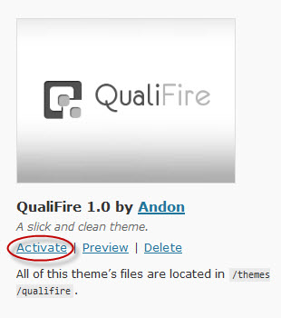
The theme's options page should appear now near the bottom of the sidebar under the name: QualiFire Options:
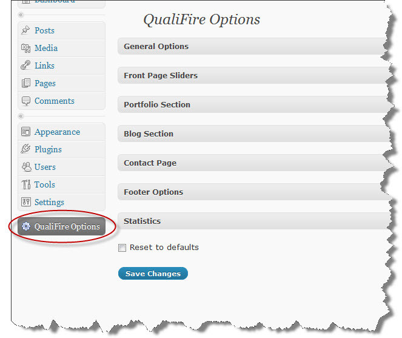
Without any content the Front Page will only display the first slider and the footer by default.
To get some content into the Home page go the admin backend Appearances --> Widgets and drag-and-drop widgets to the Widget Areas associated with the Front Page. Those are:
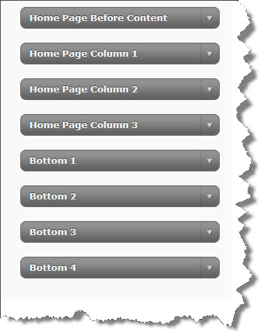
For example, if you would like to add just some text to a Widget Area, drag-and-drop the Text Widget, put some text into it, save it, go the Front page and Refresh to reflect the changes. The above listed widget areas will automatically resize to extend the full width of the page. Only the "Home Page Column 1" has the option to stay fixed width. You could set that under the QualiFire Options -> General Options. By default fixed width for "Home Page Column 1" widget area is disabled. The idea behind this options is that in some cases you might want to have this widget area to serve as a left sidebar on the home page, or display the latest posts in it, etc., I'm sure you could put your creativity to good use here.
For your reference, the "Home Page Before Content" wigdet area will automatically add separator rulers above and below it. In the theme's demo site, for instance, I used a Text widget without a title, and I used some inline styling to get the look I wanted for that widget area.
The QualiFire theme comes with three sliders: Piecemaker (Flash based), Cycle 1 (full width image) and Cycle 2 (smaller image with text and button). The three sliders could be configured from the theme's options page, for that go to QualiFire Options --> Front Page Sliders. Then use the "Current Slider" box to choose which slider to be activated for your site:
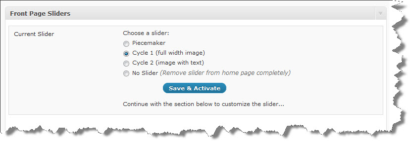
<break>special_break</break>
"A Picture's worth a thousand words...":
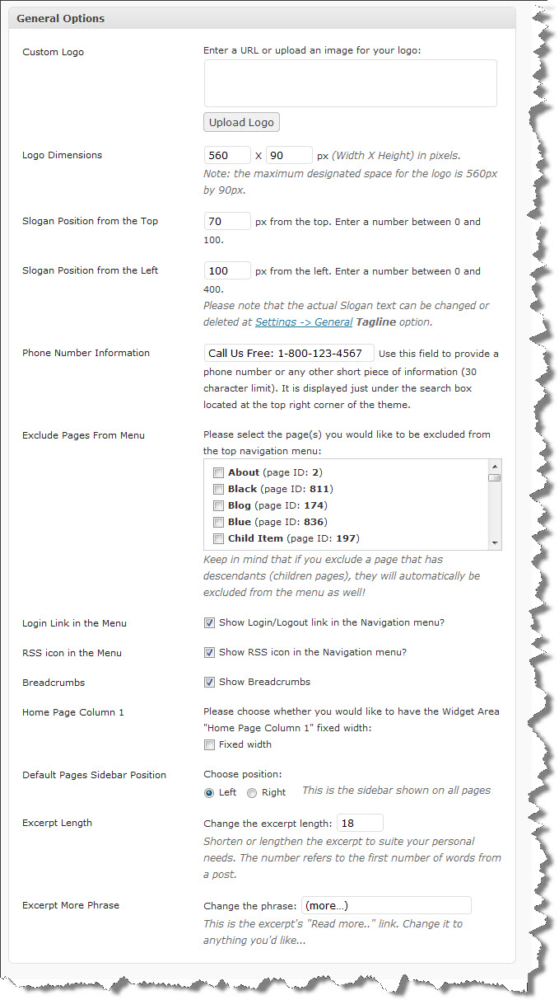
Custom Logos: The 560px x 90px area for the logo refers to the maximum available visible space. Any image outside that area will be masked. If you require larger area for the logo, you might have to tweak the css. Note: the logo image always aligned to the bottom left in the top header area so that it's aligned with the Slogan text. Depending on your logo, you might have to nudge the slogan line a bit to fit it perfectly with the logo. Use the Slogan Position fields for that.
Excerpts: The Excerpt option will modify the excerpts length globally; however it will NOT overwrite the custom excerpt from a post whenever entered by user. Another important note is that you could add a "more" link to an excerpt by appending "[...]" without the quotes:
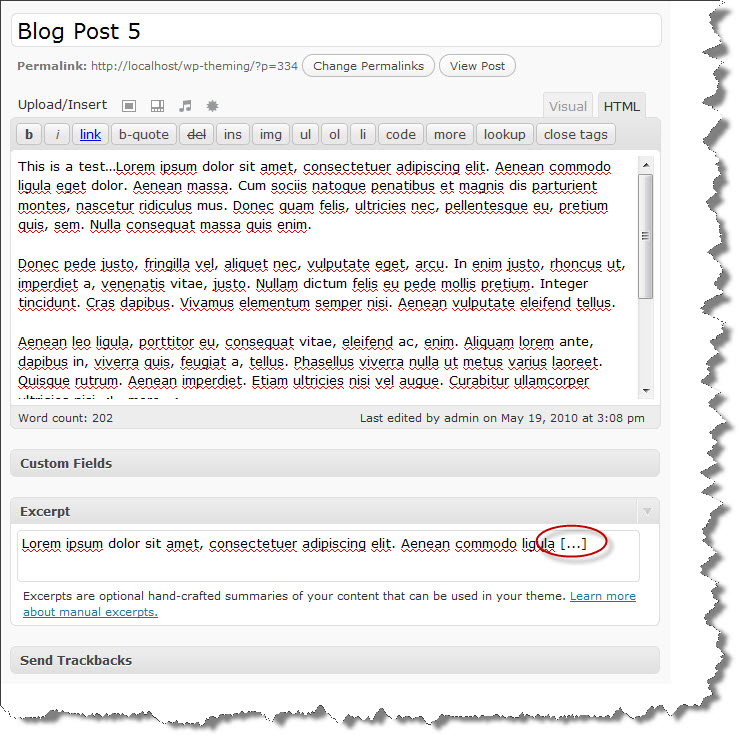
If you were to display Most Recent Post in the sidebar the result would be:
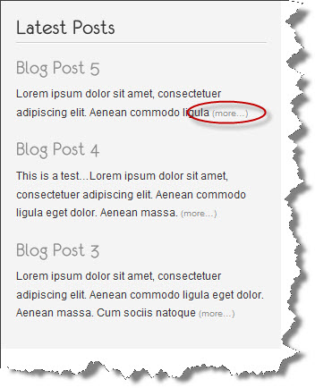
To setup Portfolio Section(s), you have to create a new page, e.g. Portfolio, or Videos. As you have the page open for editing, look in the right sidebar under Attributes and Choose Template "Portfolio page" like so:
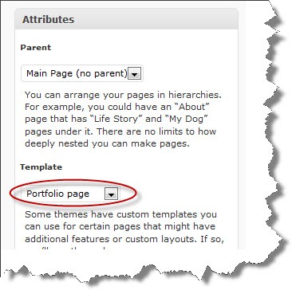
The actual text content you enter in the Portfolio page will be displayed AFTER the thumbnails.
Save the page(s) and go to QualiFire Options --> Portfolio Section and follow the instructions there:
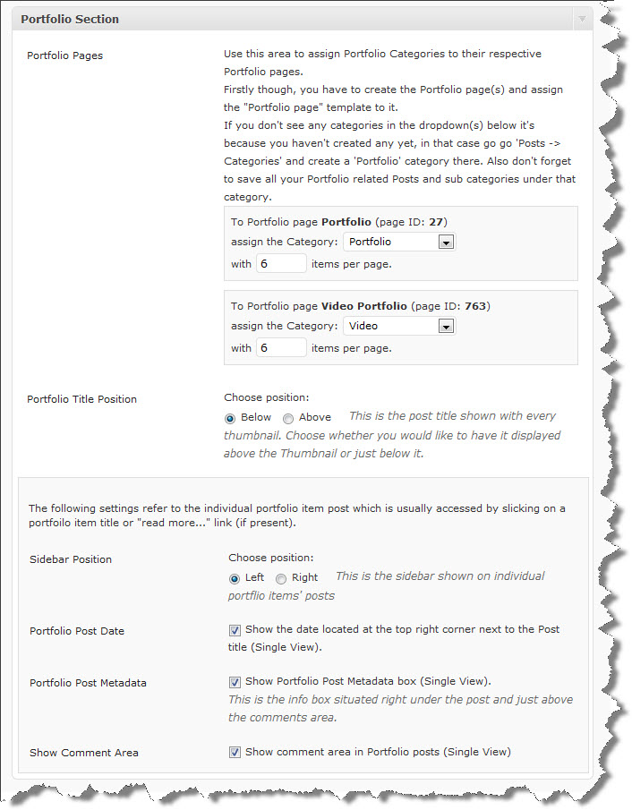
As described in the image above, you have to create a Category that will be a parent to hold the portfolio descendant categories. You can call that category whatever you like, just make sure you select it from the dropdown menu as shown in the image above to assign it to a respective page with portfolio template. Once you've setup your Portfolio category and descendant categories (subcategories) create some Posts and make sure you assign them to any one or multiple categories belonging to a Portfolio category or descendant categories. At this point you're almost done, one more thing would be the option to get the images to show as thumbnails. There are several ways to accomplish that.
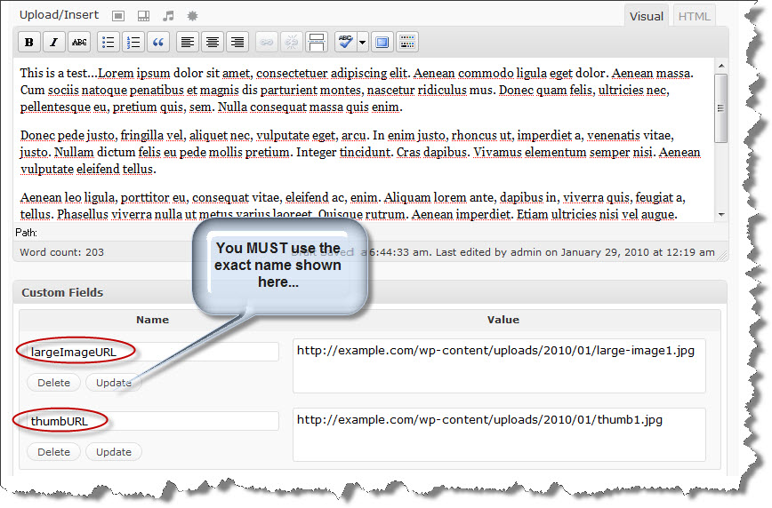
Note: The Custom Fields' names are case-sensitive, so enter them exactly as shown here in bold: largeImageURL for the large image and thumbURL for the thumbnail respectively.
To provide a portfolio item description, which will show underneath the corresponding portfolio thumbnail, use itemDescription Custom Field name (case-sensitive):
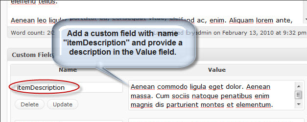
The Posts's title could be positioned either above or below each thumb. This is convenient in case that you have really long titles which could push the thumb image down a bit and misalign the thumbs horizontally. In this case the solution would be to place the titles below the thumbs.
Also the Post's Title and "Read more..." link (referring to the description underneath each thumb on the Portfolio page) are providing a link to the actual Post created for that particular item. The sidebar displayed on the single item post could be changed to be either left or right side position. You can set the position from the QualiFire Options --> Portfolio Section. Also the sidebar could be customized further by adding various widgets to it from Appearances --> Widgets and drag-and-drop widgets into the "PortfolioSidebar" widget area like so:
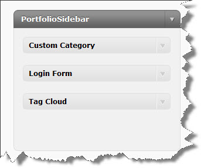
As shown in the first image above the date, postmetadata and the comments could be excluded from the items post layout.
To setup a Blog or News Section, create a Page called Blog or News or whatever you would like to call it, give it just a title and no content, and assign the template "Blog page" to it like so:
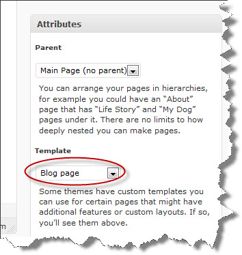
You can also change the sidebar position for the Blog pages to be either left or right. You can do that from the QualiFire Options --> Blog Section
To customize the Blog pages' sidebar, go to Appearances -> Widgets and drag-and-drop widgets you desire into the "BlogSidebar" widget area, here's an example:
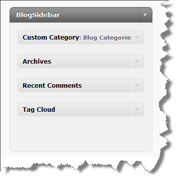
By default the blog posts displayed under the Blog section will exclude all posts that are in some way related to any of Portfolio section(s). If you would like to include them uncheck the "Exclude Portfolio(s) from Blog" option.
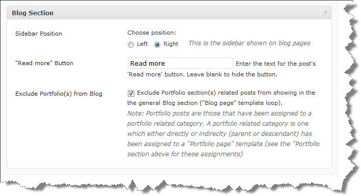
By default the Blog section will display the posts with short excerpts and a "Read more" button. To add a Post specific image use the Custom Field "postImage" (case-sensitive) to specify the url to the image (see below for example). Try to get the image dimenstions to be 590px by 190px. If you would like to have a custom excerpt text use the Excerpt textfield to enter it at the Post edit page, example:
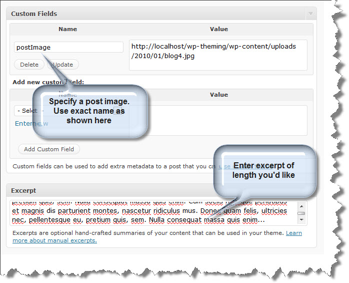
To setup a Contact page, create a Page called Contact and assign the template to it called "Contact page":
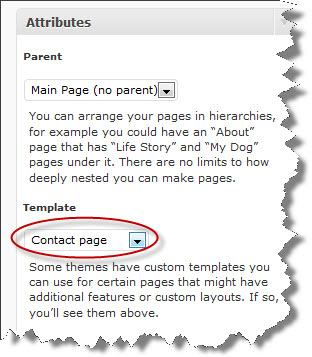
The content you enter under the Contact page will always show first in the page.
You can setup business contact information under QualiFire Options --> Contact Page, that will be displayed in a table-like nicely formatted way, the configuration for that and other options could be seen here:
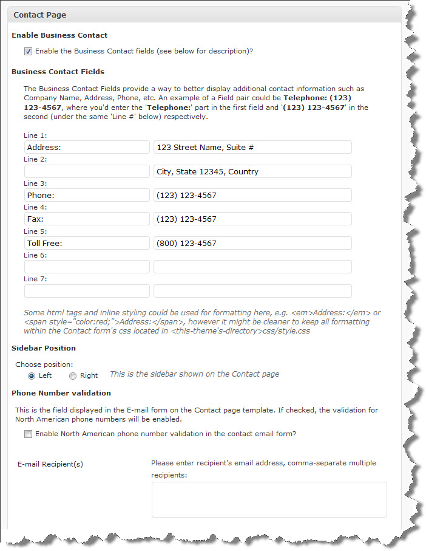
The bottom part of the Contact Page Options allows you to enable ReCAPTCHA for extra security. To use reCAPTCHA you must get an API public and private key from http://recaptcha.net/api/getkey. For the rest follow the instructions on the screen:
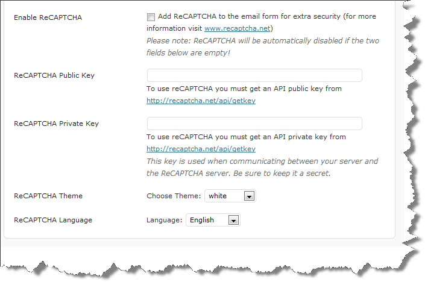
For more information on how ReCAPTCHA works please visit http://recaptcha.net
The Contact Page template comes with its own sidebar called ContactSidebar. To add Google Maps in the sidebar use the QualiFire: Google Map widget. This widget displays a location map without the need to have a Google API Key. Please, view the images below for further instructions as to how to use this widget:
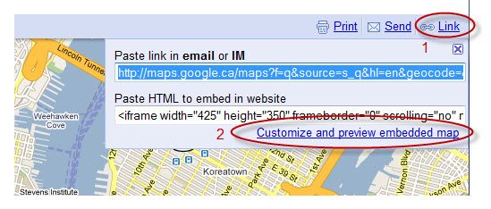
Now set the width to maximum 280 and the height could be as long as you like. Then get the code and paste it into the QualiFire: Google Map widget:
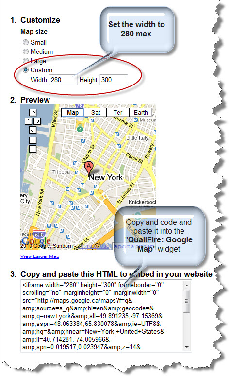
This theme has been implemented as a fixed width layout with the 960 Grid System. The full width of the template is 960px. For more information as to how the 960 Grid works, visit the 960 Grid System website.
All CSS files are located in the <themes-directory>qualifire/styles/ subdirectory. The css files are included in the <head> via my_init_styles() function located in the functions.php.
All JavaScript are included in the <head> via my_init_scripts() function located in the functions.php.
The directory common-css/ and common-images/ stores all the css that is NOT specific to any one style, but applies to all. Most of the 960 Grid System css files are in that directory.
All the style1, style2/, style3/, ... contain the specific css and images to the corresponding theme layout (color scheme).
More information and examples could be found at the QualiFire demo site.
Typography styles and Shortcode examples could be found here.
PNG transparency fix for IE6: if you would like to enable png transparency for IE6 for a specific image, you just have to add a class "pngfix" to that image, e.g. <div class="pngfix" .... By default I've applied the pngfix class to all "img" elements, so you don't have to do it for a regular <img ... /> tag, you might just have to do it if you had an image as a background to a div for example.
In the PSD_files.zip I've included subdirectories containing all the PSDs necessary to produce the corresponding theme styles.
All PSD files contain slices of the required images. In Photoshop you just have to go File --> Save for Web & Devices... select the slices you'd like to generate (Shift+click to select multiple slices), hit "Save", at the next "Save Optimized As" dialog box under Slices dropdown select "Selected Slices" and "Save".
To have an image open with prettyPhoto anywhere in your content (articles, pages, etc...), just insert rel="prettyPhoto" in the link, e.g.:
<a href="large_image_url" rel="prettyPhoto" title=""> <img src="thumbnail_url" width="60" height="60" alt="" /></a>It is the same for video, just use the video url instead of the large image url:
<a href="your_video_url_goes_here" rel="prettyPhoto" title=""> <img src="thumbnail_url" width="60" height="60" alt="" /></a>To group multiple images into a gallery add the suffix
[galleryName] to rel="prettyPhoto" so that it looks like this rel="prettyPhoto[galleryName]". Keep the gallery name the same for all the images you'd like grouped:
First image: <a href="large_image1_url" rel="prettyPhoto[gallery1]" title=""> <img src="thumbnail1_url" width="60" height="60" alt="" /></a> Second image: <a href="large_image2_url" rel="prettyPhoto[gallery1]" title=""> <img src="thumbnail2_url" width="60" height="60" alt="" /></a>
To modify the preview size just add the suffix "?width=480&height=200" to the end of the movie url. The width and height might be different in your case.
For more examples and various formats supported visit the prettyPhoto demo page
FlickrRSS: If you would like to imbed Flickr widget into your site, I have included a customized version of the "flickrRSS" plugin. You could simply install the plugin by uploading the flickrRSS.zip through the Plugins->Add New interface. Then you should be able to see a new FlickrRSS Widget under Widgets. Also, you can configure your Flickr account through Settings-> FlickrRSS:
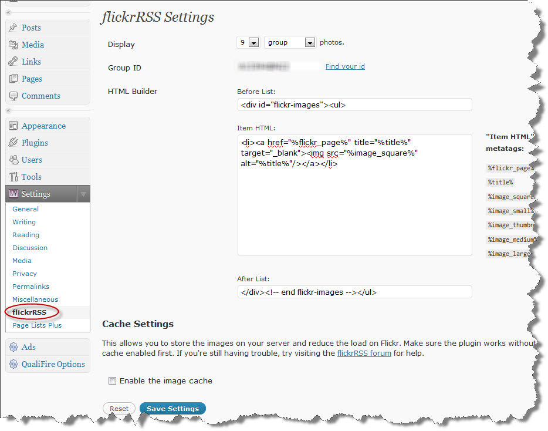
WP125: If you would like to imbed 125px by 125px sponsor Ads into your sidebar, I have included a customized version of the "WP125" plugin. You could simply install the plugin by uploading the wp125.1.3.9.zip through the Plugins->Add New interface. Then you should be able to see a new WP125 Widget under Widgets. To configure your ads, simply slick on the "Ads" menu option and follow the screen:
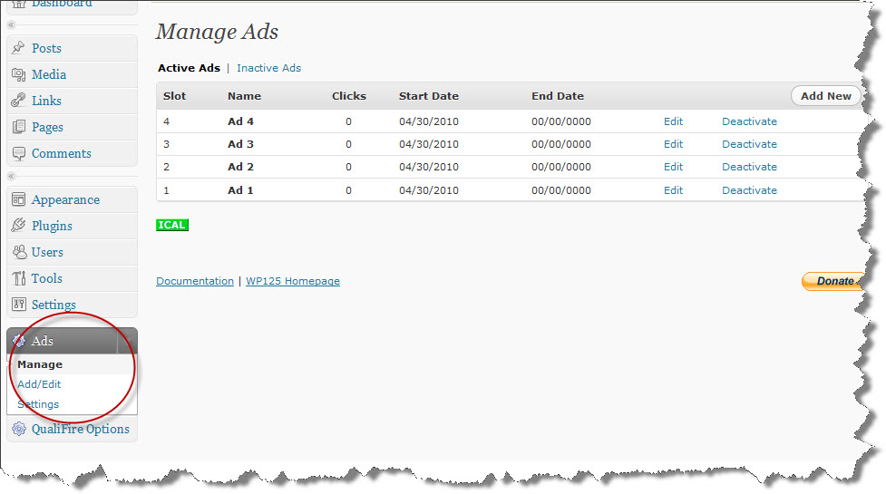
I've used the following images, icons or other files as listed.
Once again, thank you so much for purchasing this theme. As I said at the beginning, I'd be glad to help you if you have any questions relating to this theme. No guarantees, but I'll do my best to assist. If you have a more general question relating to the themes on ThemeForest, you might consider visiting the forums and asking your question in the "Item Discussion" section.
Andon